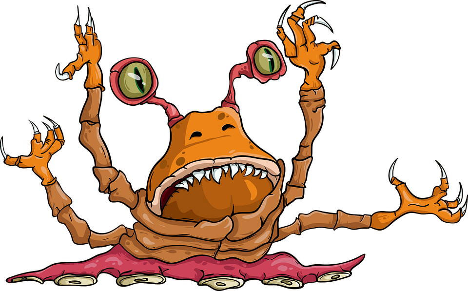

Secrets Of The World
by Egorrka
Top 3:

1. UFO
An unidentified flying object (UFO) is any aerial phenomenon that cannot immediately be identified or explained. Most UFOs are identified or investigated as conventional objects or phenomena. The term is widely used for claimed observations of extraterrestrial spacecraft.

3. Kraken
The kraken is a legendary sea monster of gigantic size and cephalopod-like appearance in Scandinavian folklore. According to the Norse sagas, the kraken dwells off the coasts of Norway and Greenland and terrorizes nearby sailors.

About the author
I'm a young naturalist who wants to discover and explain different actions and mysteries in our big world.